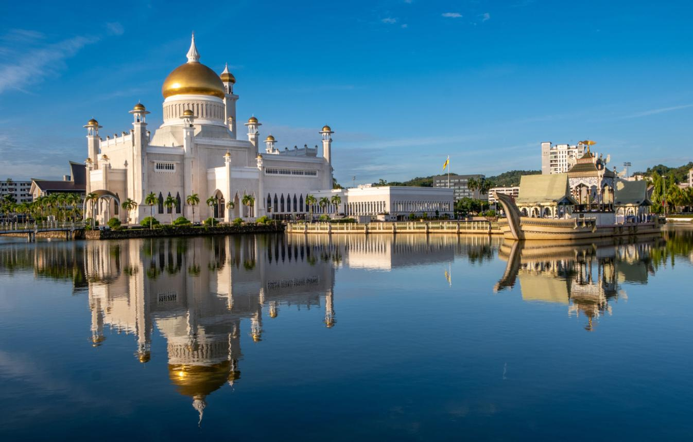

Discover Brunei Darussalam
Welcome to Brunei
Brunei Darussalam is a peaceful country located on the island of Borneo in Southeast Asia. Known as the Abode of Peace, Brunei offers visitors a combination of beautiful landscapes, cultural heritage and unique local experiences.
Why Visit Brunei?
From beautiful mosques and historic landmarks to tropical rainforests and traditional cuisine, Brunei offers memorable experiences for travellers interested in nature, culture and heritage.
Explore Brunei's Districts
Click the buttons to discover each district.

Brunei-Muara
Brunei-Muara is home to the capital, Bandar Seri Begawan, and is known for its cultural landmarks and attractions.
Events & Celebrations
Brunei celebrates a variety of cultural and national occasions, including National Day, Hari Raya Aidilfitri and the Brunei December Festival.
Visitors can explore celebrations and upcoming activities through Brunei's official tourism website.
Explore Events in Brunei